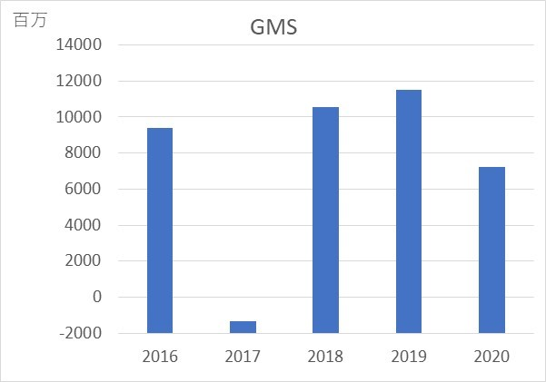

イオン企業分析 其の6
2020/5/20
イオンの企業分析を行っていきます。（6ページ目）
今回から、イオンの事業別の営業利益の推移（成長）を分析していきます。
目次
- 1 事業別利益とは
- 2 GMS事業
事業別利益
イオンはご存じのとおり多角化戦略をとっている企業です。 多角化戦略とは、様々な市場に参入することですが、イオンにとっての利益の本命は何なのか？ を見ていきます。
そこで、下記にてイオンの事業を8区分に分けて紹介
- GMS事業：総合スーパー、弁当惣菜専門店
- SM事業：スーパーマーケット、コンビニ、ディスカウントストア
- ヘルス＆ウエルネス事業：ドラッグストア、調剤薬局等
- 総合金融事業：クレジットカード事業、フィービジネス、銀行業
- ディベロッパー事業：ショッピングセンターの開発及び賃貸
- サービス・専門店事業：書店、ファッション、外食など
- 国際事業：アセアン地区・中国における小売業
- その他事業：モバイルマーケティング事業、デジタル事業
などなどですが、詳しくはこちらを参照
さて、事業が多くさすがイオンといったところですが、 一つずつ見ていきます。
GMS事業
イオンと言ったらGMS事業というようにお世話になっている人も多いのではないでしょうか？
私の地元では、1階にある食品売り場というイメージがありますが、その中に惣菜や弁当、肉の卸売場みたいな コーナーも用意されています。 WAONやカードでキャッシュバックがお得みたいです。
いかにもメインの利益源のような気がしますが、実際はどうなのだろうか？（下図） 単位は、以降も百万
見たら一目瞭然ですね...
2017年の営業利益がマイナスになっていることがわかります。主力事業で損失を出すのはさすがにヤバイ！(主観) しかし、2018年には損益が大きく改善されていることがわかります。 イオンもただ黙ってみてるというわけではなかったということですね。
そこで、イオンが打った政策が中期経営計画 であり、経営陣もさすがにヤバイと思ったのでしょう。 （興味あったらリンク貼ってるのでぜひ見てほしい）
内容は、GMS事業の主力であるイオンリテールと ダイエー（SM事業）の利益が2017年に大幅下落したため、その改善についてがメイン
簡単に言うと、安定した利益を創出するために、幅広く店舗を増やし、商品構成を見直し、販売管理費を削減することを 3年以内に行うことを目標にしていた。
翌年から損益が改善されていることを踏まえると、この計画は一年で順調に進んでいるということがうかがえる。 実際に、GMS事業の責任者は、決算報告時には思わず笑みがこぼれていたそう。
これがいわゆるV字回復というやつですねww
加えて、2020年も下落していますが、株主に贈られる事業報告書によると、 天候不順、消費税増税による消費マインドの冷え込み、1月以降の新型コロナウイルスなどが 原因として挙げられています。 2020年のイオンの事業成果については、こちら
2020年5月時点でも新型コロナウイルスはGMS事業に大きな影響を与えており、 オンラインショッピングが注目されている中、どのように時代・市場の変化に対応できるかが 今後の課題なのではないか、と考えています。
次ページでは、SM事業を見ていきます。